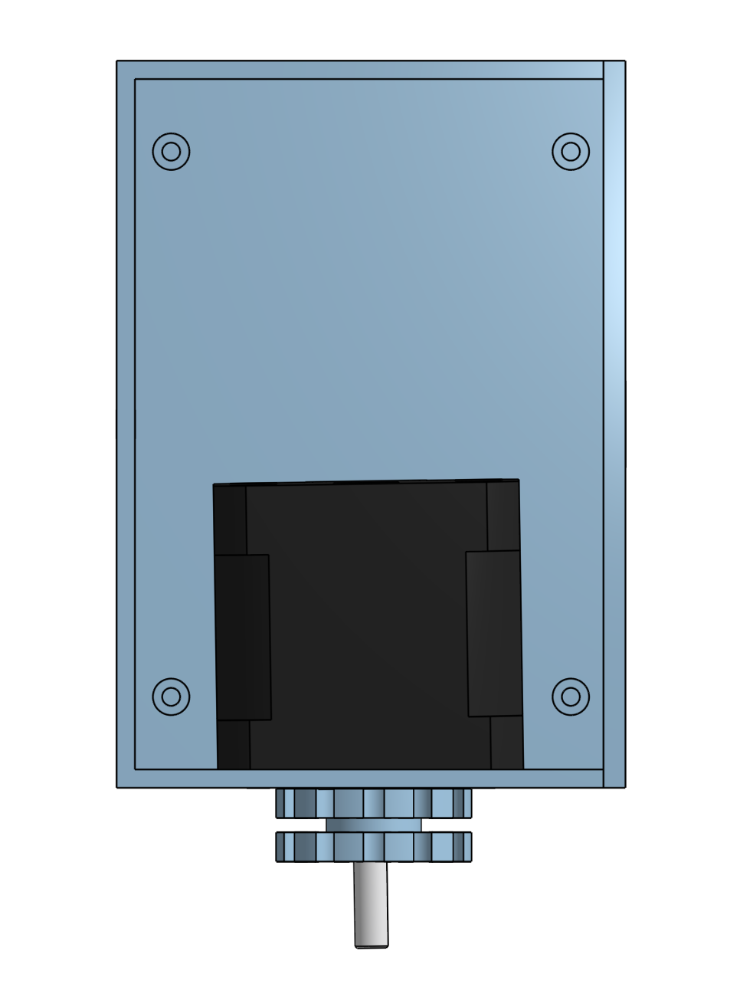
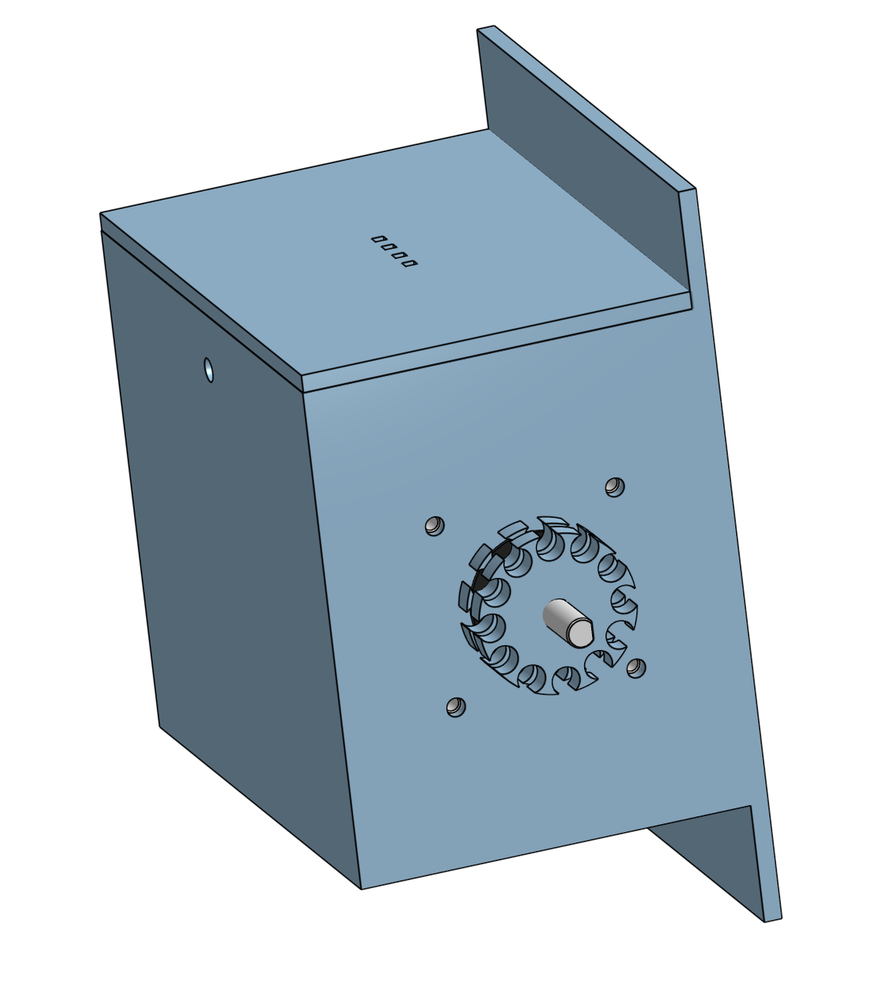
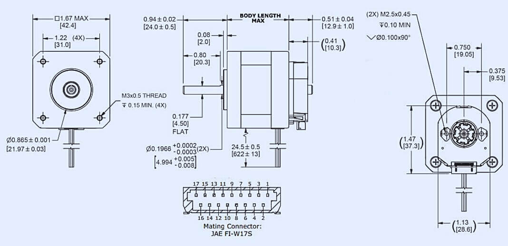

04 / Design & CAD
From sketch to enclosure.
3D modeled enclosure that mounts to existing blinds and contains the stepper motor, PCB, and gearing.

1 2 3
Fig 4.1 / Top view
CAD render of the enclosure showing the cavity for the stepper motor and the gear that drives the chain loop.
- 1M3 screw hole: used to hold the components in place
- 2Stepper motor cavity: black box visible on the back face
- 3Output gear & shaft coupling that engages the chain loop

1 2 3
Fig 4.2 / Isometric
3D view showing the photoresistor port (top), output gear face, and motor shaft.
- 1Photoresistor port: small slot on top face for ambient light sensing
- 2Output gear teeth: engages the chain loop on the user's existing blinds
- 3Ventilation slots: allows air to enter the enclosure and heat to escape
05 / Hardware
The actuator.
A NEMA 17-class stepper motor sized to drive the chain loop with controlled torque.

Fig 5.1 / Spec sheet
Mechanical drawing of the stepper motor.
06 / Block diagram
How the everything interacts with each other.

Fig 6.1 / Block diagram
High level system architecture.